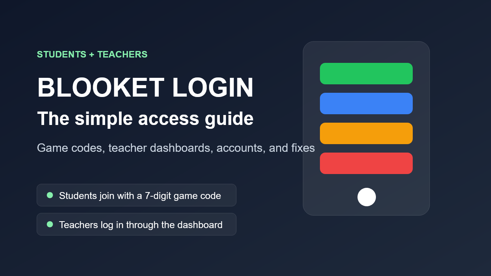

Live classroom games usually start at play.blooket.com, not through a full account dashboard.
Classroom access
The phrase Blooket login sounds simple until a whole class is waiting and nobody is sure which page they actually need.
That is where most of the confusion starts. Students often only need a game code and the play page. Teachers need the full Blooket dashboard. Parents just want to know which page is official and whether a child even needs an account. Once you separate those paths, Blooket becomes much easier to use.

Teachers usually need the main site so they can create sets, host games, assign work, and review results.
If the page is not Blooket's official site, it is not the right place to trust with a classroom login flow.
Blooket works well because it removes friction, but people still mix up joining a game with having an account
I have seen this confusion in classrooms before. A teacher says, "Go join Blooket," and half the room starts searching for a login page while the other half is trying to enter a game code. The platform itself is not the real problem. The problem is that the words join, log in, and sign up get used like they mean the same thing when they do not.
The cleaner rule is this: if the teacher is hosting a live review game, students usually go straight to the play page and enter the code. If someone needs access to account features, saved Blooks, creation tools, or classroom management, then the full Blooket login path matters.
The right path depends on the job
Blooket is easiest when people stop treating it like one single login system. Students joining a live game usually need speed, not account setup. Teachers need the dashboard because they are the ones running the activity. Parents mainly need to help children avoid unofficial pages and understand that joining a game is not the same thing as creating a full account.
Fast rule to remember:
If the classroom goal is to get everyone into a live game quickly, start with the code. If the goal is to manage content, host assignments, or keep account-based progress, use the dashboard.